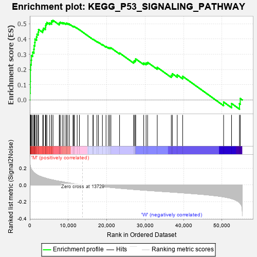
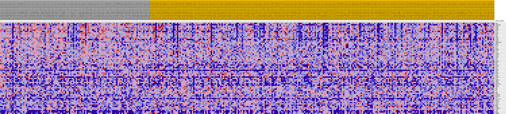
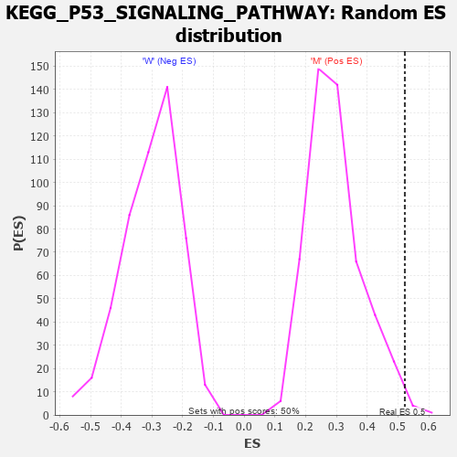

| Dataset | MUC16.MUC16.cls#M_versus_W.MUC16.cls#M_versus_W_repos |
| Phenotype | MUC16.cls#M_versus_W_repos |
| Upregulated in class | M |
| GeneSet | KEGG_P53_SIGNALING_PATHWAY |
| Enrichment Score (ES) | 0.522381 |
| Normalized Enrichment Score (NES) | 1.758758 |
| Nominal p-value | 0.005988024 |
| FDR q-value | 0.07411383 |
| FWER p-Value | 0.367 |

| PROBE | DESCRIPTION (from dataset) | GENE SYMBOL | GENE_TITLE | RANK IN GENE LIST | RANK METRIC SCORE | RUNNING ES | CORE ENRICHMENT | |
|---|---|---|---|---|---|---|---|---|
| 1 | RRM2 | na | 27 | 0.262 | 0.0443 | Yes | ||
| 2 | SERPINB5 | na | 102 | 0.231 | 0.0825 | Yes | ||
| 3 | GTSE1 | na | 113 | 0.228 | 0.1213 | Yes | ||
| 4 | CCNB2 | na | 143 | 0.221 | 0.1587 | Yes | ||
| 5 | CHEK1 | na | 144 | 0.221 | 0.1966 | Yes | ||
| 6 | CASP3 | na | 207 | 0.209 | 0.2311 | Yes | ||
| 7 | TP73 | na | 366 | 0.190 | 0.2608 | Yes | ||
| 8 | CCNB1 | na | 427 | 0.185 | 0.2913 | Yes | ||
| 9 | CDK2 | na | 744 | 0.164 | 0.3136 | Yes | ||
| 10 | CDK1 | na | 1063 | 0.148 | 0.3331 | Yes | ||
| 11 | CHEK2 | na | 1120 | 0.145 | 0.3569 | Yes | ||
| 12 | APAF1 | na | 1310 | 0.138 | 0.3771 | Yes | ||
| 13 | CCNB3 | na | 1351 | 0.136 | 0.3996 | Yes | ||
| 14 | CCNE2 | na | 1747 | 0.124 | 0.4137 | Yes | ||
| 15 | TNFRSF10B | na | 1857 | 0.120 | 0.4323 | Yes | ||
| 16 | PPM1D | na | 2188 | 0.112 | 0.4454 | Yes | ||
| 17 | RCHY1 | na | 2273 | 0.110 | 0.4628 | Yes | ||
| 18 | CYCS | na | 3335 | 0.091 | 0.4591 | Yes | ||
| 19 | EI24 | na | 3548 | 0.088 | 0.4704 | Yes | ||
| 20 | RRM2B | na | 4053 | 0.081 | 0.4752 | Yes | ||
| 21 | CASP9 | na | 4119 | 0.080 | 0.4878 | Yes | ||
| 22 | BID | na | 4195 | 0.079 | 0.5000 | Yes | ||
| 23 | CASP8 | na | 4446 | 0.076 | 0.5085 | Yes | ||
| 24 | STEAP3 | na | 5184 | 0.067 | 0.5066 | Yes | ||
| 25 | CCNG1 | na | 5668 | 0.062 | 0.5085 | Yes | ||
| 26 | CCNG2 | na | 5676 | 0.062 | 0.5189 | Yes | ||
| 27 | CD82 | na | 6038 | 0.058 | 0.5224 | Yes | ||
| 28 | COP1 | na | 7663 | 0.044 | 0.5005 | No | ||
| 29 | SHISA5 | na | 7725 | 0.043 | 0.5068 | No | ||
| 30 | PERP | na | 7918 | 0.042 | 0.5104 | No | ||
| 31 | BBC3 | na | 8453 | 0.037 | 0.5071 | No | ||
| 32 | CCND2 | na | 8860 | 0.034 | 0.5056 | No | ||
| 33 | PMAIP1 | na | 9404 | 0.029 | 0.5008 | No | ||
| 34 | SFN | na | 9498 | 0.029 | 0.5040 | No | ||
| 35 | PIDD1 | na | 9873 | 0.026 | 0.5017 | No | ||
| 36 | CCNE1 | na | 10294 | 0.022 | 0.4979 | No | ||
| 37 | CDK4 | na | 11228 | 0.016 | 0.4838 | No | ||
| 38 | SESN2 | na | 11411 | 0.015 | 0.4830 | No | ||
| 39 | TP53 | na | 11609 | 0.014 | 0.4817 | No | ||
| 40 | PTEN | na | 12321 | 0.009 | 0.4704 | No | ||
| 41 | CDKN2A | na | 12903 | 0.005 | 0.4607 | No | ||
| 42 | FAS | na | 15119 | -0.001 | 0.4207 | No | ||
| 43 | IGFBP3 | na | 16429 | -0.007 | 0.3982 | No | ||
| 44 | THBS1 | na | 16508 | -0.008 | 0.3981 | No | ||
| 45 | CCND1 | na | 17466 | -0.013 | 0.3830 | No | ||
| 46 | SERPINE1 | na | 17852 | -0.015 | 0.3786 | No | ||
| 47 | CDK6 | na | 18887 | -0.020 | 0.3632 | No | ||
| 48 | CDKN1A | na | 19826 | -0.024 | 0.3504 | No | ||
| 49 | ATR | na | 20436 | -0.027 | 0.3440 | No | ||
| 50 | DDB2 | na | 20780 | -0.029 | 0.3427 | No | ||
| 51 | BAX | na | 21097 | -0.030 | 0.3421 | No | ||
| 52 | ATM | na | 23346 | -0.040 | 0.3082 | No | ||
| 53 | MDM4 | na | 27014 | -0.054 | 0.2509 | No | ||
| 54 | GADD45B | na | 27177 | -0.054 | 0.2573 | No | ||
| 55 | GADD45G | na | 27486 | -0.055 | 0.2612 | No | ||
| 56 | TSC2 | na | 27540 | -0.056 | 0.2697 | No | ||
| 57 | TP53AIP1 | na | 29629 | -0.063 | 0.2426 | No | ||
| 58 | SESN1 | na | 30249 | -0.065 | 0.2425 | No | ||
| 59 | TP53I3 | na | 30644 | -0.066 | 0.2466 | No | ||
| 60 | ZMAT3 | na | 33152 | -0.074 | 0.2139 | No | ||
| 61 | CCND3 | na | 36806 | -0.085 | 0.1623 | No | ||
| 62 | MDM2 | na | 37086 | -0.086 | 0.1719 | No | ||
| 63 | SESN3 | na | 38348 | -0.090 | 0.1645 | No | ||
| 64 | GADD45A | na | 39764 | -0.095 | 0.1550 | No | ||
| 65 | SIAH1 | na | 50413 | -0.142 | -0.0135 | No | ||
| 66 | IGF1 | na | 52481 | -0.163 | -0.0231 | No | ||
| 67 | RPRM | na | 54541 | -0.210 | -0.0245 | No | ||
| 68 | ADGRB1 | na | 54743 | -0.220 | 0.0095 | No |

